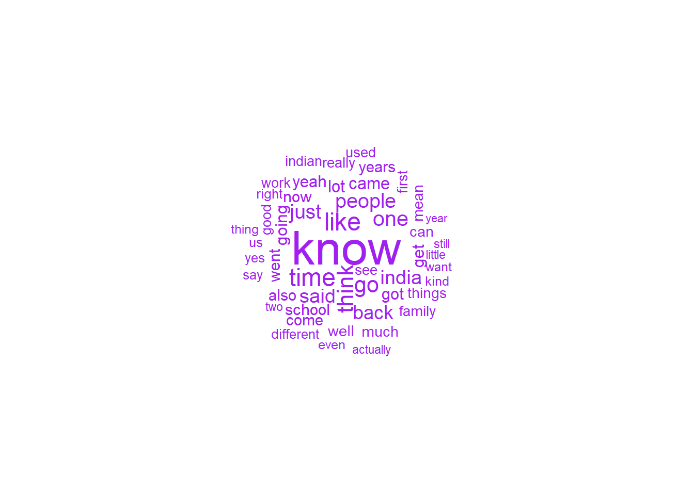

Error in library(phrasemachine): there is no package called 'phrasemachine'
Introduction
In this post, I will focus on cleaning and pre-processing my data into a format that is useful for analysis. So far, I have been struggling with this quite a bit. This post will specifically focus on cleaning the PDFs, pre-processing them in R, then trying out different descriptives.
Manual Cleaning
To recap, I downloaded 50 PDFs of oral histories. I generated word clouds in Blog Post 2 to get some sense of how I need to clean them. I also skimmed through the PDFs to understand the content better.
I deleted PDFs 42-50 (representing students of fine arts teachers). Methodologically, it doesn’t make sense to include this group. When I skimmed through the transcripts, the actual age range of students varies, so they don’t neatly represent young people. Further, for those who are actually young, they represent young people who are more attached to their cultural roots anyway, and might be fundamentally different from the young people who comment on Reddit.
This leaves me with 41 transcripts. However, I had a lot of trouble figuring out a standardised way to clean all of them, as the oral histories were collected over a number of years by different researchers - hence, not all the PDFs had a consistent format.
For transcripts 1 to 34, I initially wanted to convert them to HTML to remove bold text, which represents most of what needs to be removed. I was unable to use R packages (poppler, pdftohtml, pdf2html) to convert them to HTML and do this, since these packages only work on older versions of R.
So unfortunately, I had to do some steps manually:
Using Actions in Adobe Acrobat, I converted PDF to HTML to get rid of the running header and footer, then converted to plain text.
I manually removed the header for transcripts 12, 14, 21 and 22, and ‘narrator’, ‘date’, ‘interviewed by’, ‘place’ and ‘end of interview’ for all.
I manually removed the post-script for transcript 28 - it’s a post-interview message from the interviewee, which does not represent meaningful oral history data.
I manually removed the header, index and glossary for transcripts 35 to 41.
Processing in R
# list out files.file_list <-dir("~/Desktop/2022_Fall/GitHub/Text_as_Data_Fall_2022/posts/Transcripts", full.names =TRUE, pattern ="*.txt")# create list of text files.transcripts <-readtext(paste0(file_list), docvarnames =c("transcript", "text"))
Error in list_files(file, ignore_missing_files, FALSE, cache, verbosity): File '' does not exist.
# remove references to 'interviewer:' and 'interviewee:', as well as line breaks, '\n'. I found this website really helpful in testing out regex: https://spannbaueradam.shinyapps.io/r_regex_tester/transcripts$text <-str_replace_all(transcripts$text, "[a-zA-Z]+:", "")transcripts$text <-str_replace_all(transcripts$text, "\n", "")# create 'quanteda' corpus. oh_corpus <-corpus(transcripts$text)# create my own list of stopwords, based on qualitative reading of the first transcript.to_keep <-c("do", "does", "did", "would", "should", "could", "ought", "isn't", "aren't", "wasn't", "weren't", "hasn't", "haven't", "hadn't", "doesn't", "don't", "didn't", "won't", "wouldn't", "shan't", "shouldn't", "can't", "cannot", "couldn't", "mustn't", "because", "against", "between", "into", "through", "during", "before", "after", "above", "below", "over", "under", "no", "nor", "not")Stopwords <-stopwords("en")Stopwords <- Stopwords[!(Stopwords %in% to_keep)]# create tokens, remove punctuation, numbers and stopwords, then convert to lowercase.oh_tokens <-tokens(oh_corpus, remove_punct = T, remove_numbers = T)oh_tokens <-tokens_select(oh_tokens, pattern = Stopwords, selection ="remove")oh_tokens <-tokens_tolower(oh_tokens)# get summary of corpus.oh_summary <-summary(oh_corpus)# what's the average number of 'types' per interview? ~1868.mean(oh_summary$Types)
[1] 1867.537
# how many tokens in total? ~24k.sum(max(ntoken(oh_corpus)))
[1] 24086
# create metadata. moving forward, i can potentially add extra metadata, like gender of interviewee and year of immigration.docvars(oh_corpus) <- oh_summary
Text Plots
# i want to re-create the wordcloud from Blog Post 2, except now with cleaned data - just for the wordcloud, i'm going to remove all stopwords, so that they don't show up in it.dfm <- oh_tokens %>%dfm() %>%dfm_trim(min_termfreq =10, verbose =FALSE, min_docfreq = .1, docfreq_type ="prop") %>%dfm_remove(stopwords("en"))textplot_wordcloud(dfm, max_words=50, color="purple")

The wordcloud looks a lot better! There’s definitely some references to migration (come, going, went), and temporal aspects (time, years). Conversations also involved references to family, school, work and India (likely the largest sub-group of South Asian interviewees).
I made a network plot, just out of curiosity - I don’t know why there is a ‘<’ and ‘>’ even after removing punctuation. Will I need to remove these manually?
N-Grams
I want to test out n-grams with the first transcript to get a sense of what kind of terms I may need to further remove.
Just from the above phrases, it seems like my leaning towards topic modelling might be good for the transcripts. We can see references to South Asia (Mahatma Gandhi, Bombay, East Indians) and the US (Tufts, Massachusetts). There are also references to WW2, which could potentially come up as a topic.
Next Blog Post
Generate all comments for the Reddit data, as well as more posts. I may need to use Python for this.
Use str_match() compare how many times “culture” appears in the oral histories vs. Reddit data, and do a statistical test.
Try out CleanNLP (Week 4 Tutorial).
Source Code
---title: "Post 3"author: "Saaradhaa M"description: "Cleaning PDFs"date: "10/16/2022"editor: visualformat: html: df-print: paged toc: true code-copy: true code-tools: true css: "styles.css"categories: - post 3 - saaradhaa---```{r}#| label: setup#| warning: false#| message: falseknitr::opts_chunk$set(echo =TRUE, warning =FALSE, message =FALSE)load("post3_saaradhaa.rdata")library(tidyverse)library(stringr)library(quanteda)library(quanteda.textplots)library(readtext)library(phrasemachine)```## IntroductionIn this post, I will focus on cleaning and pre-processing my data into a format that is useful for analysis. So far, I have been struggling with this quite a bit. This post will specifically focus on cleaning the PDFs, pre-processing them in R, then trying out different descriptives.## Manual Cleaning- To recap, I downloaded 50 PDFs of oral histories. I generated word clouds in Blog Post 2 to get some sense of how I need to clean them. I also skimmed through the PDFs to understand the content better.- I deleted PDFs 42-50 (representing students of fine arts teachers). Methodologically, it doesn't make sense to include this group. When I skimmed through the transcripts, the actual age range of students varies, so they don't neatly represent young people. Further, for those who are actually young, they represent young people who are more attached to their cultural roots anyway, and might be fundamentally different from the young people who comment on Reddit.- This leaves me with 41 transcripts. However, I had a lot of trouble figuring out a standardised way to clean all of them, as the oral histories were collected over a number of years by different researchers - hence, not all the PDFs had a consistent format.- For transcripts 1 to 34, I initially wanted to convert them to HTML to remove **bold** text, which represents most of what needs to be removed. I was unable to use R packages (poppler, pdftohtml, pdf2html) to convert them to HTML and do this, since these packages only work on older versions of R.- So unfortunately, I had to do some steps manually: - Using Actions in Adobe Acrobat, I converted PDF to HTML to get rid of the running header and footer, then converted to plain text. - I manually removed the header for transcripts 12, 14, 21 and 22, and 'narrator', 'date', 'interviewed by', 'place' and 'end of interview' for all. - I manually removed the post-script for transcript 28 - it's a post-interview message from the interviewee, which does not represent meaningful oral history data. - I manually removed the header, index and glossary for transcripts 35 to 41.## Processing in R```{r}# list out files.file_list <-dir("~/Desktop/2022_Fall/GitHub/Text_as_Data_Fall_2022/posts/Transcripts", full.names =TRUE, pattern ="*.txt")# create list of text files.transcripts <-readtext(paste0(file_list), docvarnames =c("transcript", "text"))# remove references to 'interviewer:' and 'interviewee:', as well as line breaks, '\n'. I found this website really helpful in testing out regex: https://spannbaueradam.shinyapps.io/r_regex_tester/transcripts$text <-str_replace_all(transcripts$text, "[a-zA-Z]+:", "")transcripts$text <-str_replace_all(transcripts$text, "\n", "")# create 'quanteda' corpus. oh_corpus <-corpus(transcripts$text)# create my own list of stopwords, based on qualitative reading of the first transcript.to_keep <-c("do", "does", "did", "would", "should", "could", "ought", "isn't", "aren't", "wasn't", "weren't", "hasn't", "haven't", "hadn't", "doesn't", "don't", "didn't", "won't", "wouldn't", "shan't", "shouldn't", "can't", "cannot", "couldn't", "mustn't", "because", "against", "between", "into", "through", "during", "before", "after", "above", "below", "over", "under", "no", "nor", "not")Stopwords <-stopwords("en")Stopwords <- Stopwords[!(Stopwords %in% to_keep)]# create tokens, remove punctuation, numbers and stopwords, then convert to lowercase.oh_tokens <-tokens(oh_corpus, remove_punct = T, remove_numbers = T)oh_tokens <-tokens_select(oh_tokens, pattern = Stopwords, selection ="remove")oh_tokens <-tokens_tolower(oh_tokens)# get summary of corpus.oh_summary <-summary(oh_corpus)# what's the average number of 'types' per interview? ~1868.mean(oh_summary$Types)# how many tokens in total? ~24k.sum(max(ntoken(oh_corpus)))# create metadata. moving forward, i can potentially add extra metadata, like gender of interviewee and year of immigration.docvars(oh_corpus) <- oh_summary```## Text Plots```{r}# i want to re-create the wordcloud from Blog Post 2, except now with cleaned data - just for the wordcloud, i'm going to remove all stopwords, so that they don't show up in it.dfm <- oh_tokens %>%dfm() %>%dfm_trim(min_termfreq =10, verbose =FALSE, min_docfreq = .1, docfreq_type ="prop") %>%dfm_remove(stopwords("en"))textplot_wordcloud(dfm, max_words=50, color="purple")```The wordcloud looks a lot better! There's definitely some references to migration (come, going, went), and temporal aspects (time, years). Conversations also involved references to family, school, work and India (likely the largest sub-group of South Asian interviewees).```{r}# create fcm.fcm <-fcm(dfm)# keep only top features.small_fcm <-fcm_select(fcm, pattern =names(topfeatures(fcm, 50)), selection ="keep")# compute weights.size <-log(colSums(small_fcm))# create network.textplot_network(small_fcm, vertex_size = size /max(size) *4)```I made a network plot, just out of curiosity - I don't know why there is a '\<' and '\>' even after removing punctuation. Will I need to remove these manually?## N-GramsI want to test out n-grams with the first transcript to get a sense of what kind of terms I may need to further remove.```{r}documents <- transcripts$text[1]phrases <-phrasemachine(documents, minimum_ngram_length =2, maximum_ngram_length =4, return_phrase_vectors =TRUE, return_tag_sequences =TRUE)phrases[[1]]$phrases[1:100]# save.image("post3_saaradhaa.RData")```Just from the above phrases, it seems like my leaning towards topic modelling might be good for the transcripts. We can see references to South Asia (Mahatma Gandhi, Bombay, East Indians) and the US (Tufts, Massachusetts). There are also references to WW2, which could potentially come up as a topic.## Next Blog Post- Generate all comments for the Reddit data, as well as more posts. I may need to use Python for this.- Use str_match() compare how many times "culture" appears in the oral histories vs. Reddit data, and do a statistical test.- Try out CleanNLP (Week 4 Tutorial).